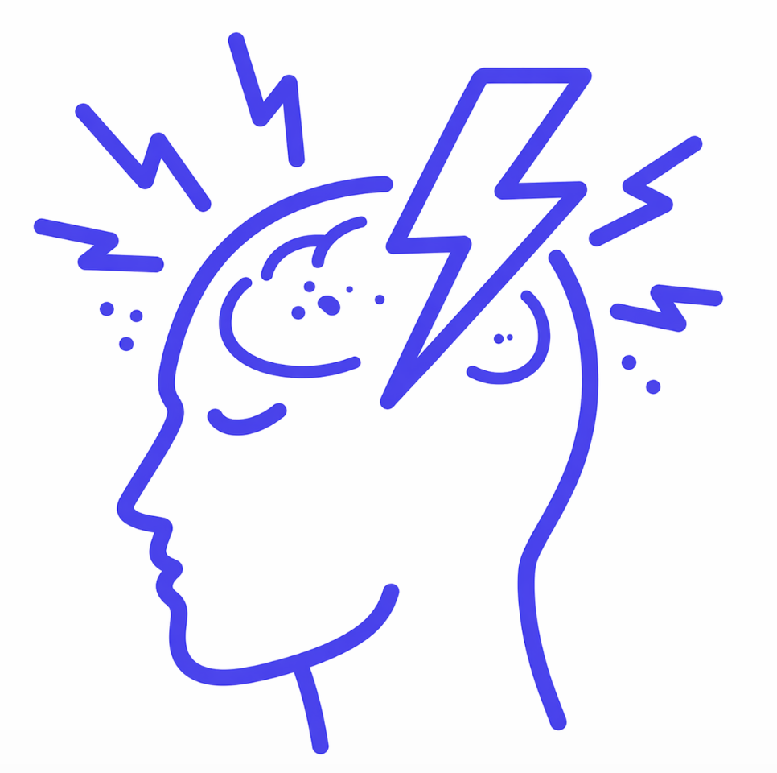
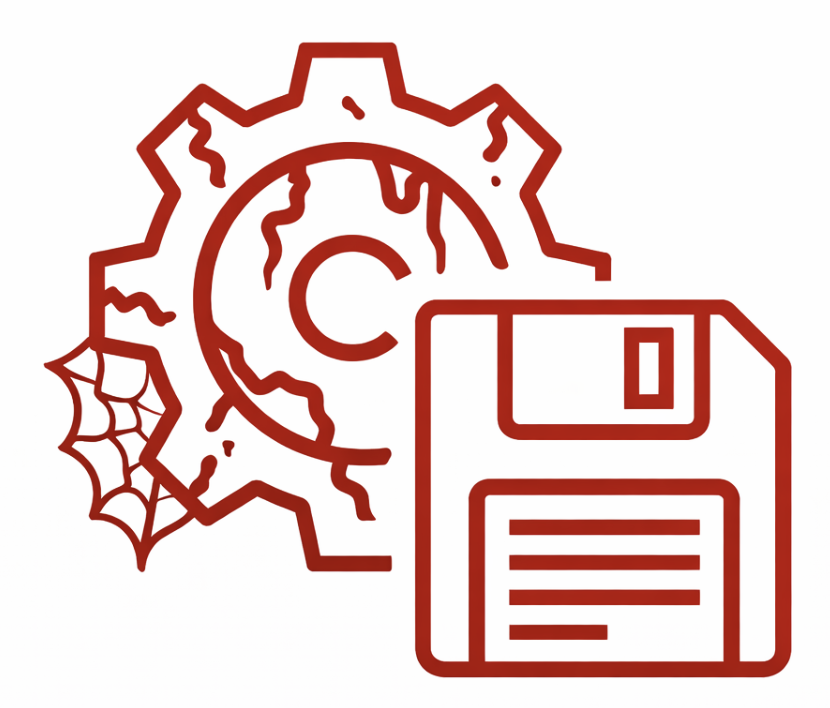
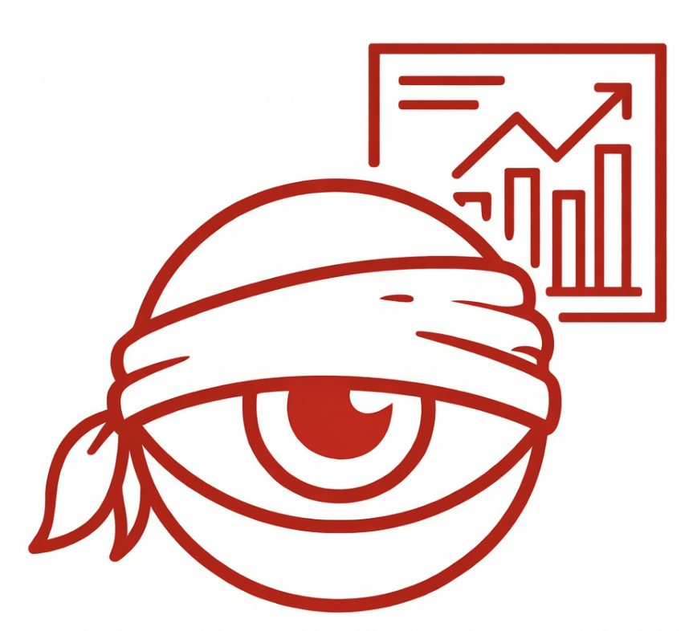

Predictive intelligence for capital management
4
klíčové vrstvy platformy
3
vývojové fáze od POC po scale-up
1
decision engine pro data, predikci i risk
Prediktivní AI platforma pro inteligentní správu kapitálu
Robootec.ai propojuje tržní data, AI predikci, obchodní logiku a risk management do jednoho rozhodovacího systému.
Problém trhu
Současné obchodování naráží na limity člověka i technologií
Trhy generují obrovské množství dat a rozhodování pod tlakem zvyšuje chybovost i slabší práci s rizikem.
CHAOS V DATECH
Pomalé zpracování obrovského množství informací.

LIDSKÝ FAKTOR
Špatné rozhodávní pod vlivem stresu a emocí.

TECHNOLOGICKÉ LIMITY
Mnoho nástrojů funguje izolovaně a nezohledňuje širší kontext trhu, strategií a rizika.

SLEPOTA
Bez širšího kontextu trhu, strategie a rizika vznikají rozhodnutí, která nevidí celý obraz a reagují příliš pozdě.
DŮSLEDEK: Nízské investiční zhodnocení, 95% retail traderů končí ve ztrátě a profi nástroje jsou finančně nákladné. NIC MEZI TÍM.
Naše řešení
Jedna platforma, která propojuje data, predikci a exekuci
Robootec.ai staví AI platformu, která zpracovává tržní data, generuje prediktivní signály, vyhodnocuje obchodní strategie a řídí riziko v rámci jednoho systému.
Data processing
Hloubková analýza trhu a práce se signály napříč různými datovými vstupy.
AI prediction
Predikce budoucího vývoje s důrazem na kontext, patterny a rozhodovací relevance.
Strategy engine
Výběr a vyhodnocení scénářů podle definovaných parametrů, logiky a pravděpodobnosti.
Risk & execution
Nastavení parametrů, řízení pozice a automatizace jako součást jednoho workflow.
Jak to funguje
Od signálu k rozhodnutí
Platforma propojuje signály, scénáře a risk management do čistého tříkrokového workflow.
Propojení signálů, strategií a instrumentů
Platforma propojí prediktivní signály se strategiemi a obchodními instrumenty.
Vyhodnocení scénářů
Vyhodnotí scénáře s nejvyšší pravděpodobností úspěchu a prioritizuje relevantní rozhodnutí.
Řízení obchodu a risk management
Nastaví parametry obchodu a řídí pozici podle definovaného risk managementu.
Kde jsme dnes
Produkt budujeme ve fázích
Rozvoj Robootec.ai je rozdělený do postupných fází s jasnou logikou od ověření konceptu po širší komerční využití.
Funkční prototyp
Ověření konceptu, zpracování dat a první AI analýza rozhodovacích scénářů.
Integrovaná logika
Propojení strategií, risk managementu a obchodních instrumentů do jednoho produktu.
Škálovatelná architektura
Více modelů, více instrumentů a připravenost na B2B i B2C rozšíření.
Validace
Testování prototypu je součástí vývoje
První prototyp jsme ověřovali na demo účtu na trhu NASDAQ. Výsledky z interního testování nám pomáhají zpřesňovat modely, řízení rizika i rozhodovací logiku platformy.
Historické/testovací výsledky nejsou garancí budoucí výkonnosti. Nejde o veřejnou nabídku investice ani garanci budoucí výkonnosti.
Pro koho
Budujeme technologii pro budoucí B2B i B2C využití
Robootec.ai směřuje k využití ve dvou liniích s důrazem na škálovatelnou architekturu a jasný produktový směr.
B2B
Licence a technologické partnerství pro finanční instituce a další partnery pracující s kapitálem a rozhodovacími systémy.
B2C
Uživatelská platforma pro retail investory s důrazem na srozumitelný přístup, kontrolu rizika a produktovou škálovatelnost.
Tým
Tým, který spojuje vizi, AI, operace, finance a compliance
Dlouhodobá spolupráce a kombinace technických, provozních i právních kompetencí vytváří základ pro systematický růst projektu.
RG
Radek Gelety
Founder & CEO
DF
David Fogl
CTO
MJ
Michaela Jankulárová
Operations
MŠ
Markéta Schröcková
Founder & Finance
JS
Jan Sedláček
Legal & Compliance
R
Robin
AI Strategist
Kontakt
Hledáme partnery, investory a early supporters
Zajímá vás technologie, partnerství nebo investiční příběh Robootec.ai? Ozvěte se nám a rádi navážeme.